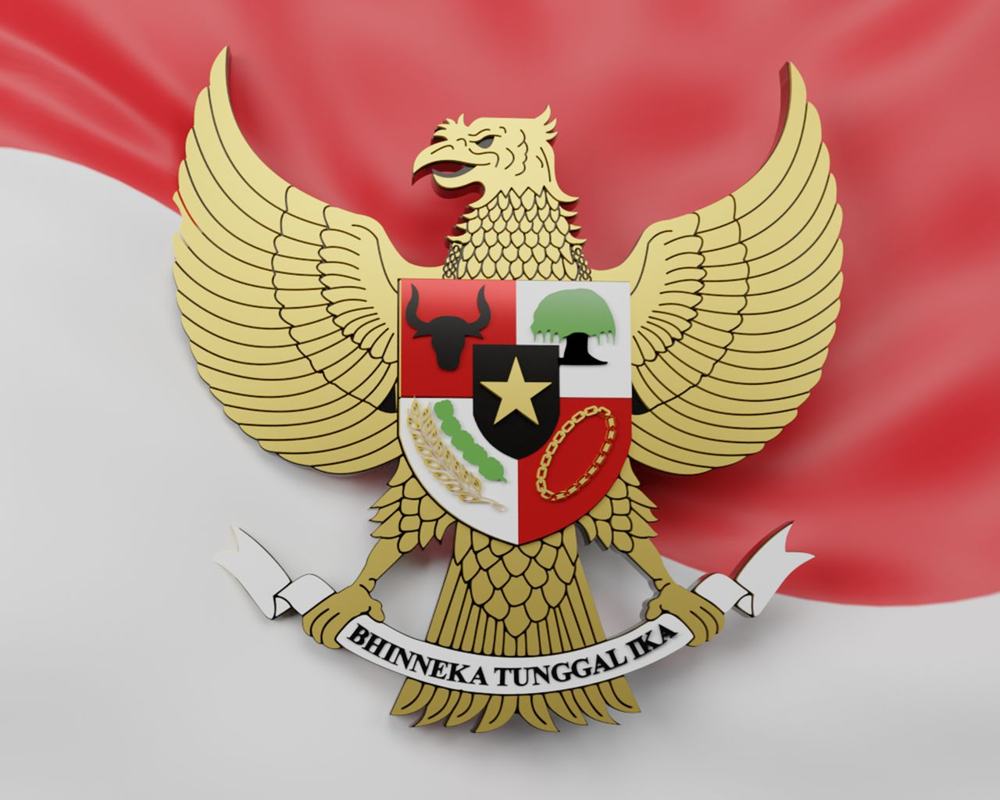

Sistem dan Dinamika Demokrasi Pancasila

Sumber : PPM Manajemen
{kind=link}
Apa Itu Demokrasi?
Demokrasi berasal dari kata Demos yang artinya rakykat dan kratos yang artinya pemerintah. Oleh karena itu, demokrasi adalah sebuah sistem pemerintahan yang berasal dari rakyat, untuk rakyat, dan oleh rakyat itu sendiri.
Demokrasi Berdasarkan Penyaluran Kehendak Rakyat
Demokrasi Langsung
Demokrasi langsung adalah ketika wakil rakyat dipilih secara langsung oleh rakyat melalui pemilu.
Demokrasi Tidak Langsung
Demokrasi tidak langsung adalah ketika wakil rakyat yang dipilih melaksanakan tugas dan mengambil kebijakan yang harus dipatuhi oleh rakyat yang memilih mereka.
Demokrasi Berdasarkan Prinsip Ideologi
Demokrasi Konstitusi
Demokrasi konstitusi biasanya dianut oleh negara liberal. Indonesia menganut demokrasi ini namun tidak 100%.
Demokrasi Rakyat
Demokrasi rakyat adalah jenis demokrasi yang biasanya dianut oleh negara sosialis, contohnya RRC (Republik Rakyat Cina). Pemilihan dilakukan oleh partai komunis karena mereka dipercaya rakyat.
Demokrasi Pancasila
Demokrasi ini menggunakan musyawarah, yaitu kesepakatan bersama yang berasal dari semua orang dan harus disetujui oleh semua.
Demokrasi Berdasarkan Tujuan
Demokrasi Formal
Demokrasi yang menjunjung tinggi persamaan dalam bidang politik dan ekonomi, tanpa adanya pengurangan kesenjangan ekonomi. Demokrasi ini biasa dianut oleh negara liberal.
Demokrasi Material
Demokrasi yang berfokus pada upaya menghilangkan perbedaan dalam bidang ekonomi, persamaan bidang politik diabaikan. Demokrasi ini biasa dianut oleh negara komunis.
Demokrasi Gabungan
Demokrasi ini mengambil kebaikan dan membuang keburukan dari kedua jenis demokrasi di atas. Demokrasi ini biasanya dianut oleh negara non-blok.
Tronic!